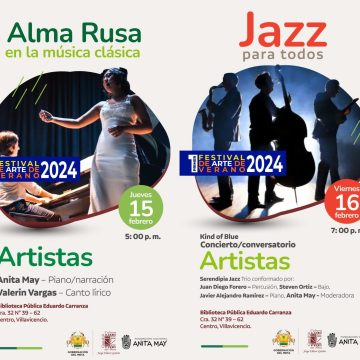

14 febrero 2024
Evento
Musica
Alma rusa en la musica clasica y jazz para todos.
Estas son algunas de las actividades que se estarán desarrollando en el marco del Primer Festival de Arte de Verano aquí en la Casa de la Cultura...